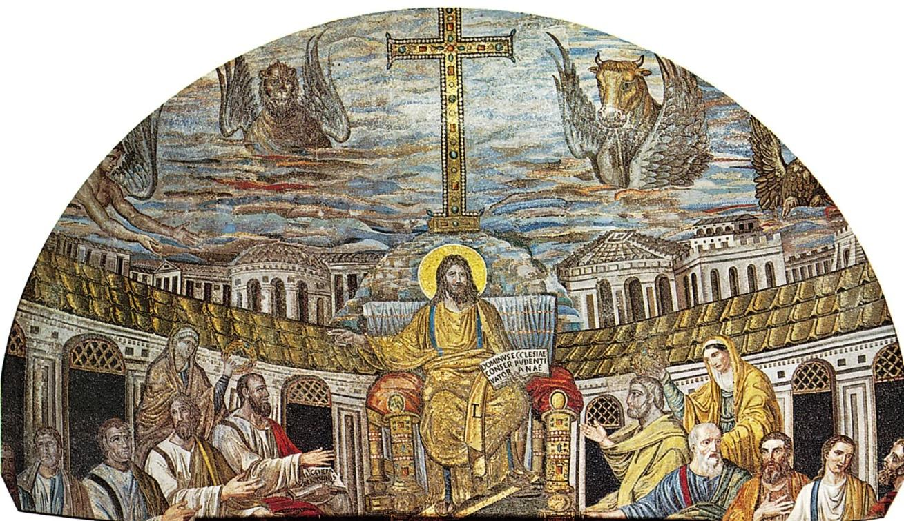
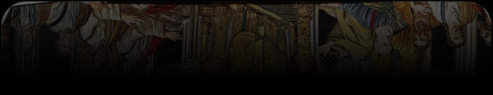
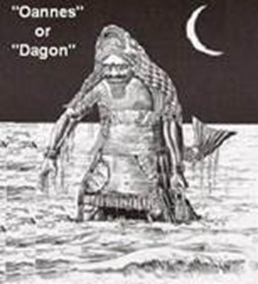
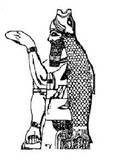

Contents


Before you study this 2nd Beast teaching, please study the teaching of the 1st Beast by clicking on the link.
https://thewaydhymin-eng.github.io/Aliyah/studies/the-fir…
In the book of Chazon/Revelation, we witness the emergence of the initial beast (which symbolizes the establishment of Christianity at the Council of Nicaea) and subsequently, a second beast arises from the first one
(representing the formation of the Christian faith around the figure of Jesus Christ), leading to global worship of Jesus Christ.
Yochanan/John identified the specific individual mentioned in Chazon/Revelation 13 by his name, XESus (Jesus), using his symbol [pictogram], his signature [mark], and his emblem [monogram].
How Rome came to be the centre of the Babylonian religious cult.
Not many are aware that the religion of Babylon was officially transferred to Rome when Rome conquered Babylon. This is why Kepha/Peter correctly named Rome as Babylon while addressing the congregation in Rome.
Kepha Aleph/1 Kepha/Peter 5 13 She (the assembly) who is in Baḇel, chosen together with you, greets you, also my son, Marqos.
The original Roman Pontiff, as well as all subsequent Popes, served as the High Priest of Dagon the Dragon, the head of the "Babylonian Order" of Priests. When Attalus, the religious and political leader of Pergamon, passed away in the year B. C 133, he passed on the leadership of the "Babylonian Priesthood" to Rome through his will.
The Etruscans introduced Babylonian religious beliefs and practices to Italy after migrating from Lydia, the territory of Pergamos. They appointed a leader of the priesthood as the Pontiff. Afterwards, the Romans acknowledged this Pontiff as their political leader. Julius Caesar was appointed as the leader of the Etruscan religious group in B. C. 74. In B.C. 63, he was made "Supreme Pontiff" of the "Babylonian Order," thus becoming heir to the rights and title of Attalus, Pontiff of Pergamos, who made Rome his heir by will.
Therefore, the initial Roman Emperor assumed leadership of the "Babylonian Priesthood," and Rome took over from Babylon. Every Emperor after that point was also known as Pontifex Maximus, meaning the High Priest of the Babylonian Cult of Sol Invictus, which was essentially a form of Mithraism originating from the worship of Tammuz in Babylon.
The Pope of Rome continues to uphold the role of High Priest as the Pontiff. All the core beliefs of Christianity, such as Sunday worship, the Trinity, Easter, Christmas, etc. , have been established by the Pope's decree. And so forth. יהוה did not ordain these pagan customs, and none of these core beliefs is found in the Scriptures or in the teachings of Yahushua Ha Maschiach.
The Roman Empire officially acknowledged sun worship during Aurelian's reign when he established the cult of "Sol Invictus". The cult of Sol Invictus, Mithraism, and Catholicism/Christianity are essentially all modern forms of The Mystery Religion of Babylon the Great Whore, with little distinction between them.
In the year 307 A.D. Emperor Diocletian, a sun worshipper, was involved in the dedication of a temple to Mithra, and he was responsible for the burning of the Set-Apart Scripture (the Hebrew originals that is why we don’t have any today) which made it possible for later emperors to formulate Christianity. Without the original Hebrew texts, the Roman version of the Universal Christo-pagan Mystery Religion was crafted in secret by pagan sun worshippers.
After the reign of Diocletian, the Roman Emperor Constantine (the creator of modern-day Christianity) maintained the title "Pontifus Maximus" the high priest of paganism, and remained a worshipper of Apollo (Apollo is Tammuz in the Greek culture). His coins were inscribed: "SOL INVICTO COMITI", which is interpreted as "Committed to the Invincible Sun" until his death.
In his rule, the worship of the True Creator was combined with pagan sun worship, a process known as syncretism, and was officially designated as "Christianity" by the less-than-righteous Roman Empire and its official church, the less-than-holy Catholic Church. Christianity was developed as a way to unite various pagan religions into a single belief system.
Cybele, the Phrygian goddess referred to as "the mother of god" by her devotees, had strong ties to the worship of Mithra. Mithraism was predominantly followed by men, while the worship of Cybele was primarily embraced by women.
The members of the Mithra cult were referred to as "Fathers," while those of the Cybele cult were called "Mothers." Following the initiation into the Mysteries of Mithra, the participants received a symbolic marking in the form of an X on their forehead. The symbol created by the intersection of the ecliptic and celestial equator was a significant emblem of Mithra.
Sunday (Deis Solis), the day of the Sun, was considered by Mithraists a sacred day of rest. December 25th (the birthday of Mithra) was celebrated as the birth of the Sun, given birth by the "Queen of Heaven" - "Mother of god". The Mithraists celebrated a Mithraic love feast. This feast consisted of loaves of bread decorated with crosses with wine, over which the priest pronounced a mystic formula. Mithra was considered a mediator between god and man.
Constantine is believed to be the creator of Hesus Horus Krishna as the deity of the Roman Empire, and it is thought that the name gradually transformed into Jesus H. The figure of Jesus Christ. It is widely understood that Constantine established a new religion centred on Jesus Christ that abolished The Law of יהוה, which replaced the teachings and traditions of the Hebrew God, including the observance of festivals, the Shabbat, Passover, and even the name of the Messiah. Instead, he incorporated elements of pagan worship, such as changing the name of the Messiah to one honouring Zeus.
The First and Second Beast of Chazon/Revelation

The first beast is “the beast of the sea” which is a reference to Dagon the Fish God who later became known as the sea serpent and then the Dragon. This is the “god” of the Babylonian Religion. Dagon pictured “coming out of the sea”.
Nimrod, the King of Babylon, was the first High Priest of Dagon. The High Priests of Dagon adorned a massive, hollowed-out fish on their head, allowing the body to hang over them like a cape.

As the religion spread throughout cultures the garments of the High Priest of Dagon the Dragon evolved as well into the Mitre Hat with a long cape instead of an actual gutted fish. The Pope today remains the Pontiff and High Priest of Dagon the Dragon:
Dagon the Dragon is responsible for bestowing the earthly throne and power upon The Pope of Rome, who is also known as the High Priest of Dagon. Yahushua, not the pagan priests who claim to be his earthly representatives, is the true king and should not be replaced by them sitting on his throne as the Vicar of Christ.
Yahushua, in his earthly form, did not claim power and authority, but instead humbled himself
by relinquishing his title as Prince of Yisra’el and choosing to live as a humble
servant.
The Pope is described in great detail in the book of Chazon/Revelation:
Chazon/Revelation 174And the woman was arrayed in purple and scarlet colour, and decked with gold and precious stones and pearls, having a golden cup in her hand full of abominations and filthiness of her fornication
The religion that developed around Jesus Christ can be interpreted as the worship of the Dragon or Dagon. The creature known as The Beast of the Earth is mentioned in both the Book of Dani’el and the Book of Chazon/Revelation. The pig is the most detestable creature to יהוה. The Torah refers to the pig as the "beast. "
Devarim/Deuteronomy 148And the pig is unclean to you, because though it has a division in the horn of its foot, its food does not come back; their flesh may not be used for food or their dead bodies touched by you.
Dani’el/Daniel 723“This is what he said, ‘The fourth beast is the fourth reign on earth, which is different from all other reigns, and it devours all the earth, tramples it down and crushes it. 24And the ten horns are ten sovereigns from this reign. They shall rise, and another shall rise after them, and it is different from the first ones, and it humbles three sovereigns, 25and it speaks words against the Most High, and it wears out the set-apart ones of the Most High, and it intends to change appointed times (יהוה’s Feasts) and law, and they are given into its hand for a time and times and half a time.
Chazon/Revelation 131And I stood on the sand of the sea. And I saw a beast coming up out of the sea, having seven heads and ten horns, and on his horns ten crowns, and on his heads names of blasphemy.
Yahushua is a contraction of יהוה and Yahshua meaning יהוה is our deliverer or saviour.
Yeshayahu/Isaiah 122“See, Ěl is my deliverance, I trust and am not afraid. For Yah, יהוה, is my strength and my song; and He has become my deliverance.
Tehillim/Psalm 182יהוה is my rock and my stronghold and my deliverer; My Ěl is my rock, I take refuge in Him; My shield and the horn of my deliverance, my high tower. 3I call upon יהוה, the One to be praised, And I am saved from my enemies.
Yeshayahu/Isaiah 4311“I, I am יהוה, and besides Me there is no saviour. 12“I, I have declared and saved, and made known, and there was no foreign mighty one among you. And you are My witnesses,” declares יהוה, “that I am Ěl.
Yeshayhu/Iaiah 45
15 Truly You are Ěl, who hide Yourself, O Elohim of Yisra’ěl, Saviour!
17 Yisra’ěl shall be saved by יהוה with an everlasting deliverance. You are not to be ashamed nor hurt, forever and ever.
21 “Declare and bring near, let them even take counsel together. Who has announced this from of old? Who has declared it from that time? Is it not I, יהוה? And there is no mighty one besides Me, a righteous Ěl and a Saviour, there is none besides Me. 22 “Turn to Me and be saved, all you ends of the earth! For I am Ěl, and there is none else.
Therefore, let’s examine what the meaning of the contracted name Jesus means. The name Jesus is broken down into its Latin prefix Je which means “earth” and Latin suffix sus which means “pig”. Remember Jesus is a LATIN name not Hebrew and is a contracted sentence name or contraction in the same way as Yahushua is in Hebrew.
WEBSTER'S NEW WORLD DICTIONARY
Je – Earth personified.
GE (je,ge) GAEA;GAIA GAEA (Jee),Noun. [Gr.Gaia derived from "Ge", earth]
in Greek mythology the earth personified as a goddess ,mother of Uranus the Titans,etc, MOTHER EARTH: identified by the Romans with
Tellus: also Gala,Ge. GEO (jeo,jee)
Sus – Pig, a contemptible person sus N 3 1 NOM S C T, sus N 3 1 VOC S C T sus, suis swine; hog, PIG, sow;
2: a contemptible person (Webster's Seventh New Collegate Dictionary)
It's not surprising that the Greeks changed the name Yahushua [יהושע/ יהושוע] to Jesus. The name Jesus symbolizes a contemptible and disgraceful association with the abominable pig (beast) of the earth, which honours their pagan deities. Jesus is identified as the god of the second creature [Christianity] in the book of Chazon/Revelation 13.
Easter involves the tradition of sacrificing a pig to Nimrod, who later became known as the sun god Ba’al, and eventually Zeus in Greek mythology.
Is it a surprize that Ham/Gammon is traditionally on the menu with Easter and Christmas?
1 Maccabees 147They were commanded to build pagan altars, temples, and shrines, and to sacrifice pigs and other unclean animals there.
48They were forbidden to circumcise their sons and were required to make themselves ritually unclean in every way they could,
49so that they would forget the Torah/Law which יהוה had given through Mosheh and would disobey all its commands.
50The penalty for disobeying the king's decree was death.
51The king not only issued the same decree throughout his whole empire, but he also appointed officials to supervise the people and commanded each town in Yudeah to offer pagan sacrifices.
52Many of the Yehudim were ready to forsake the Torah/Law and to obey these officials. They defiled the land with their evil,
53and their conduct forced all true Yisra’elites to hide wherever they could.
54On the fifteenth day of the month of Kislev in the year 145, King Antiochus set up "The Awful Horror" on the altar of the Temple, and pagan altars were built in the towns throughout Yudeah.
55Pagan sacrifices were offered in front of houses and in the streets.
56Any books of the Torah/Law which were found were torn up and burned,
57and anyone who was caught with a copy of the sacred books or who obeyed the Law was put to death by order of the king.